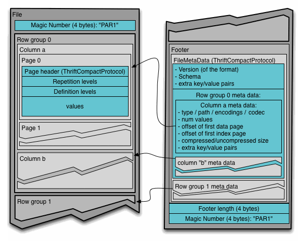

The Definition
Databricks defines Delta Lake as "open source software that extends Parquet data files with a file-based transaction log for ACID transactions and scalable metadata handling". This is a lot to unpack so let's take it apart.
There are three distinct areas in the definition I want to elaborate on:
- Parquet files
- File-based transactions for ACID transactions
- Scalable metadata handling
I know the definition and a lot of the material talks about Delta Lake and I don't care. A table is a nice, concrete thing which is what we really care about. So let's look into that, forget the lake.
1. Parquet files?
So were are told that Delta Lake extends Parquet files, but what are Parquet files? Parquet is a file format with the following attributes:
- The data is stored in a column-oriented manner
- The data is compressed

Below is simplified version of the layout describing a table with two columns and N row groups. Now imagine the table has 100 rows and, for example, 4 row groups. Each row group might contain the data of 25 rows. The data is stored in column batches within the row group.
This is contrary to what you'd except if of a naive interpretation of the concept of storing data in a column-oriented fashion.
What I found exhilarating about the idea is that you have collect statistics on row groups and column chunks which allow for skipping data when reading the file. The column chunks are actually further divided into pages which have statisctics of the minimum and maximum values for that specific column and page.
Now, say you query data with a filter WHERE myColumn >= 100. A Parquet reader can skip column chunks where the maximum value of myColumn is less than 100 which is kinda cool.
We'll learn later on that Delta Tables utilize the same idea with partitions.
2. File-based transactions for ACID transactions
Could not be bothered yet.
3. Scalable metadata handling
Could not be bothered yet.